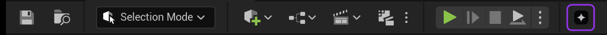
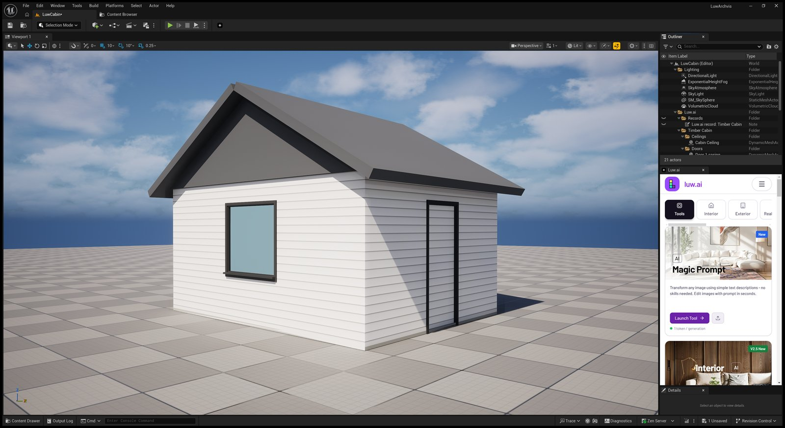
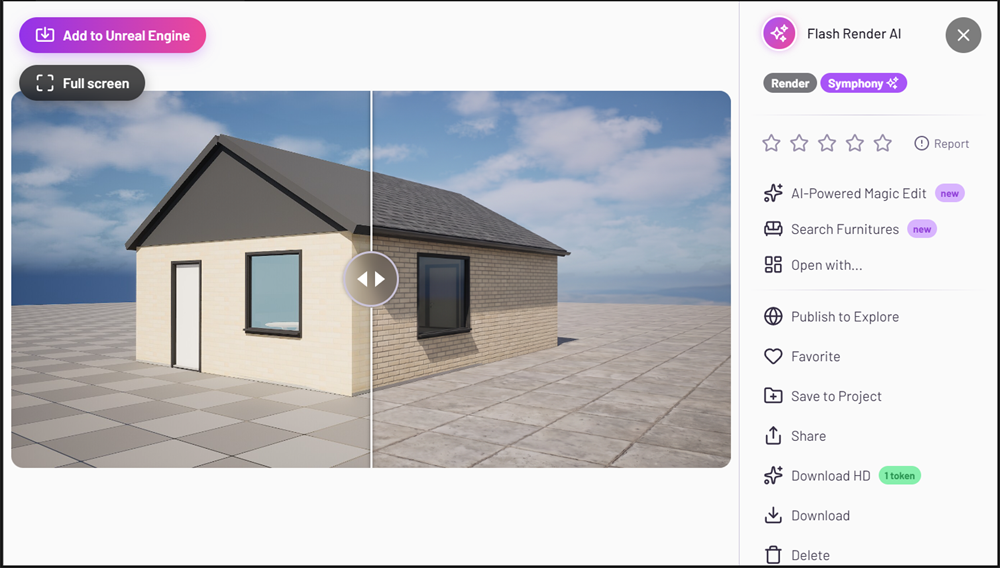
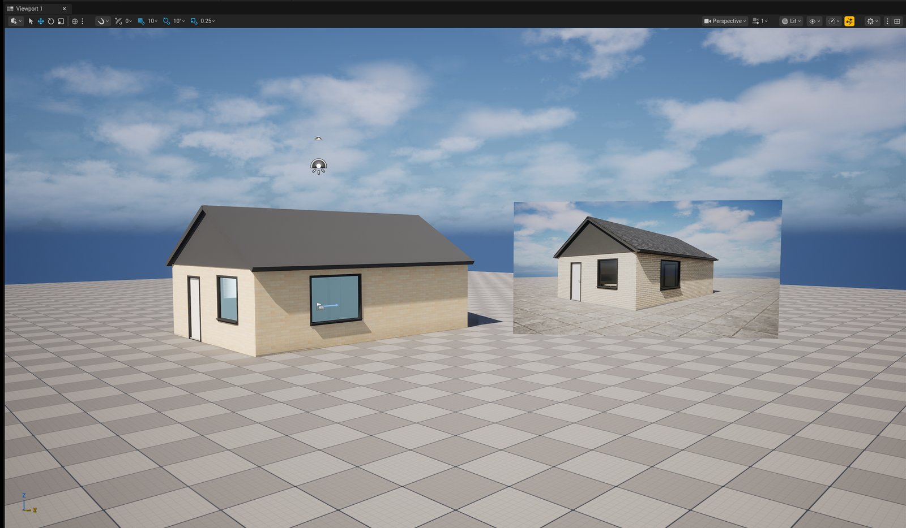
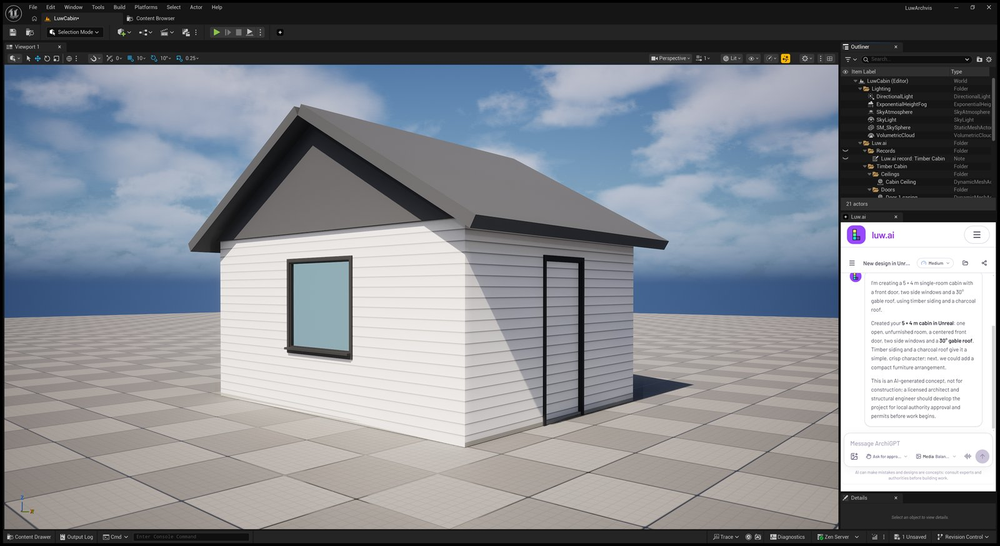

Luw.ai for Unreal Engine
Design a building by talking to ArchiGPT and watch it appear in your Unreal level. Then render it, right inside the Unreal editor. No export, no extra app.
What you need
- Unreal Engine 5.7 on Windows. The download is built for 5.7, the only version it loads in. Tested on Unreal Engine 5.7.
- A Luw.ai account. Each render uses tokens from your account: 1 token for one image.
- An internet connection. The renders are made on Luw.ai's servers.
- The Luw.ai plug-in:
Luw.ai-Unreal.zip. Download it here and unzip it into a folder.
Install the plug-in
- Close the Unreal editor.
- In the unzipped folder, right-click
install.ps1and choose Run with PowerShell. Windows asks you to allow it, because Unreal Engine is in Program Files. Luw.ai is then in every project you open with Unreal Engine 5.7. - Open your project.
install.ps1 -Project "C:\Projects\MyProject\MyProject.uproject" instead. Luw.ai goes into that project's Plugins folder.Open Luw.ai and sign in
Click the Luw.ai button in the level editor's toolbar, or choose Window › Luw.ai.

The Luw.ai panel docks on the right, with the Outliner and Details. It is the Luw.ai web app, made to work with Unreal. Drag its tab wherever you like; it opens there next time.

Get your first render
-
Set up your view. Frame the level viewport until you like the picture. What you see is what Luw.ai renders.
Tip: the Lit view mode with materials gives better renders than Wireframe or Unlit.
- Click Render AI on the panel's home page: your Unreal view is already in it. You don't need to save or export anything. Moved the camera? Click Capture Unreal Engine view on the picture to take the new view.
- Choose options if you like: Time of Day, Lighting, or a short Prompt such as “golden hour, warm light on the brick”. Or leave them on Auto.
- Click Generate Image with AI. One image uses 1 token. Your render is ready in about a minute. Click it to open it.
-
Compare and keep it. Drag the slider to compare the render with your view, then click Add to Unreal Engine at the top left.

-
That's it. The render is now in your level as a picture on a plane beside the model, facing the camera. It shows exactly as rendered: the level's fog and lights don't change it. To remove it, press Ctrl+Z once.

Your model and its render, side by side in Unreal.
More tools
Open the menu (☰) at the top of the panel for more tools, such as interiors, exteriors, sketch to render and video. Most tools start with your Unreal view. With 3DGen AI you get a 3D model, and Add to Unreal Engine brings it into your level as a static mesh, standing on the ground you look at.
Design a building with ArchiGPT
ArchiGPT is Luw.ai's design assistant. In Unreal it builds what you describe straight into your level, as ordinary actors in folders under Luw.ai in the Outliner, while you watch.
- Open ArchiGPT from the home page of the Luw.ai panel.
-
Say what you want. Describe the building, or attach a photo of a plan you drew on paper and write something like “Apply this floorplan as a villa.” ArchiGPT builds it in Unreal: walls, rooms, doors and windows, the kitchen, furniture.

The cabin in Unreal, and the conversation that built it. - Change it by talking. “Give it a 30° gable roof”, “move the east wall 0.5 m out”, “add a terrace by the door”. Only what changed is rebuilt. Select something in Unreal first and ArchiGPT knows what “this” means. It knows your own actors too: “what else is in the scene?”
- Change it yourself, too. Move, turn, scale or delete what ArchiGPT built, or add actors of your own, whenever you like. Your changes stay when ArchiGPT builds again.
- Add materials. “A dark grey metal roof, light warm brick on the outside walls.” ArchiGPT puts materials on the model, and can have Pattern AI make a texture just for it. When a step uses tokens, ArchiGPT shows what it costs and waits for your Approve.
- Add what no library has. “A bronze sculpture by the door.” ArchiGPT designs it, 3DGen AI makes it a real 3D model, and it lands in your level.
- Render it. Frame a view in Unreal and ask for a render. Click a result to see it full size, or put it in your level with Add to Unreal Engine.
Help
- I don't see the Luw.ai button.
- Choose Window › Luw.ai. If it isn't there either, choose Edit › Plugins, search for Luw.ai, turn it on and restart the editor.
- The panel is empty or doesn't load.
- Luw.ai needs the internet. Check your connection, then close the Luw.ai tab and open it again.
- The picture in the panel is an old view.
- Click Capture Unreal Engine view on the picture.
- Something went wrong.
- Send us the file
%LOCALAPPDATA%\Luw.ai\logs\plugin.logand the lines starting with “LogLuwAI” in Unreal's Output Log (Window › Output Log). - How do I remove the plug-in?
- Close the Unreal editor, then right-click
uninstall.ps1in the unzipped folder and choose Run with PowerShell. What Luw.ai made in your projects stays in their LuwAI content folder.